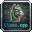

Run Massive Local LLMs with
Extreme Speed & 4x KV Memory Compression
A state-of-the-art standalone Windows application powered by llama-cpp-python, Google TurboQuant, and Electron. Complete with structured reasoning accordions, Hugging Face Model Store, GGUF binary inspection, and a local OpenAI-compatible API server. Zero cloud dependency.

Engineered for Elite Local Intelligence
Designed from the ground up to overcome the VRAM ceiling, eliminate latency, and make local AI effortlessly productive.
Google TurboQuant INT4 KV Cache
Compresses attention key-value caches from 16-bit to 4-bit / 2-bit with randomized Fast Walsh-Hadamard outlier suppression, unlocking up to 4x longer context windows without VRAM overflow.
Intelligent Discrete GPU Routing
Auto-detects dedicated NVIDIA (CUDA) and AMD / Intel (Vulkan) GPUs for full tensor layer offloading, with automatic seamless fallback to multi-threaded CPU SIMD (AVX2/FMA) for integrated graphics.
Structured Chain-of-Thought
Real-time token parser extracts reasoning tokens from DeepSeek-R1, QwQ, Gemma, and Llama 3 into collapsible, glowing glassmorphic thought accordions with live generation speed telemetry.
Universal PC Model Scanner
Multi-threaded storage crawler automatically searches across all internal and external drives, Ollama caches, LM Studio, and Hugging Face directories to instantly discover all GGUF models.
Hugging Face Model Store
Browse, search, and download top quantized GGUF weights directly from Hugging Face Hub with real-time multi-threaded chunk streaming, speedometers, and sha256 checksum verification.
Local OpenAI-Compatible API
Built-in high-speed FastAPI server running on port 8008 provides standard
/v1/chat/completions and /v1/models endpoints ready for Cursor, Continue,
LangChain, and AutoGen.
TurboQuant vs Standard Inference
KV Cache memory consumption and token throughput across 8K-32K context lengths.
| Model Architecture | Context Length | Standard FP16 KV | TurboQuant INT8 KV | TurboQuant INT4 KV (Active) | Memory Saved |
|---|---|---|---|---|---|
| Llama-3.3-70B-Instruct | 16,384 tokens | 10.24 GB VRAM | 5.12 GB VRAM | 2.56 GB VRAM | 75.0% (4x) |
| DeepSeek-R1-Distill-Qwen-32B | 32,768 tokens | 8.60 GB VRAM | 4.30 GB VRAM | 2.15 GB VRAM | 75.0% (4x) |
| Qwen-2.5-Coder-14B | 32,768 tokens | 5.40 GB VRAM | 2.70 GB VRAM | 1.35 GB VRAM | 75.0% (4x) |
| Gemma-2-9B-IT | 8,192 tokens | 2.10 GB VRAM | 1.05 GB VRAM | 0.52 GB VRAM | 75.2% (4x) |
Obsidian Dark & Clean Studio Light Themes
Seamless one-click theme switching between sleek midnight obsidian for night sessions and high-contrast studio light for day coding.
Active Chat & Parameter Controls
Precise temperature, top-p, top-k, min-p, repeat penalty sliders, and structured GBNF schema enforcement.

Architecture & Verified Contributor Modal
Direct view of engine telemetry, TurboQuant outlier suppression parameters, and project lead verification.
Crafted by Protik Das
Primary Contributor & Original Creator of Llama.cpp Turbo Desktop.

👑Protik Das Lead Architect
Architect of the standalone Llama.cpp Turbo platform, integrating Google TurboQuant randomized Fast Walsh-Hadamard KV compression, discrete GPU scheduling, and cross-platform desktop UI.
Ready to Experience Turbocharged Local AI?
Download the official Windows Setup installer to get started in seconds. Instant setup with zero cloud dependency.
dist_app/LlamaCppTurboDesktop-v1.0-Setup.exe